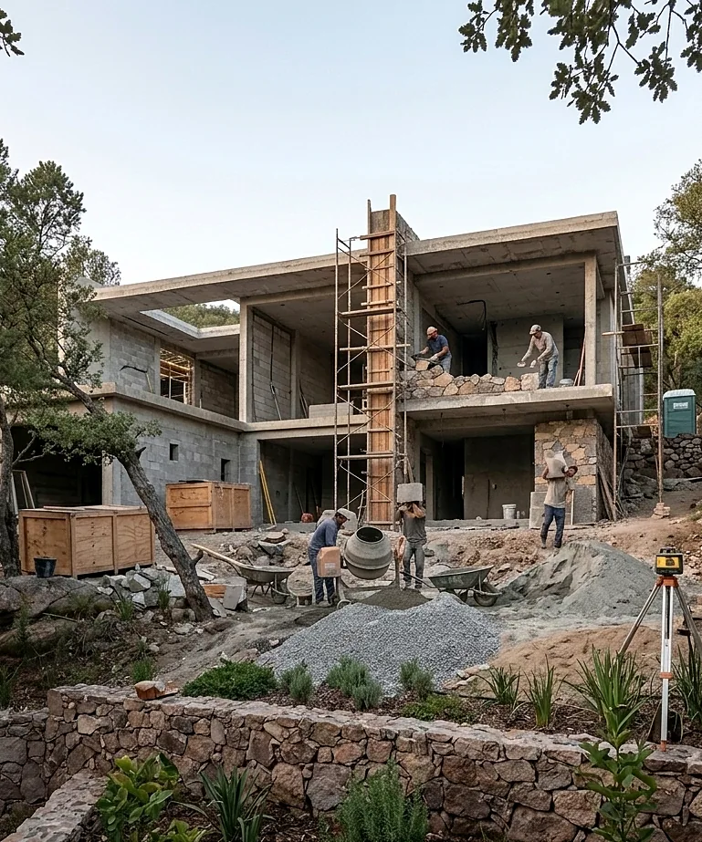

Planeación
Organizamos etapas, secuencias, suministros y actividades.
Integramos planeación, contratación, ejecución y seguimiento para construir de acuerdo con los planos, especificaciones y objetivos definidos.
Una obra exige coordinar personas, materiales, tiempos y recursos. Nuestro enfoque mantiene continuidad entre diseño y construcción, registra avances y atiende oportunamente las situaciones de campo.
La modalidad y las responsabilidades se establecen por escrito antes de iniciar.
Organizamos etapas, secuencias, suministros y actividades.
Damos seguimiento a contratistas, proveedores y especialistas.
Revisamos procesos y soluciones contra la documentación vigente.
Verificamos materiales, procesos y terminaciones relevantes.
Registramos estimaciones, ajustes y decisiones autorizadas.
Revisamos pendientes y documentación correspondiente.
Cada proyecto requiere un programa propio según su complejidad, ubicación y sistema constructivo.

Confirmamos proyecto ejecutivo, alcances y condiciones para comenzar.
Definimos partidas, proveedores, responsabilidades y condiciones.
Organizamos actividades, suministros y arranque.
Coordinamos avances y verificamos puntos técnicos relevantes.
Documentamos decisiones y su efecto en costo, tiempo y calidad.
Revisamos pendientes y cierre de los alcances acordados.
Actividades ejecutadas y próximas etapas.
Registro fotográfico y observaciones.
Revisión de trabajos según el esquema acordado.
Control de modificaciones autorizadas.
Costos y fechas dependen del proyecto, sitio, materiales, autorizaciones y decisiones del cliente. Se formalizan mediante presupuesto, programa y contrato.
Compártenos la información disponible para revisar alcance y siguientes pasos.
Solicitar revisión inicial Escribir por WhatsApp